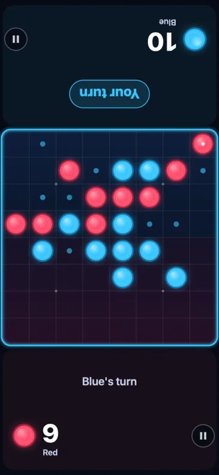
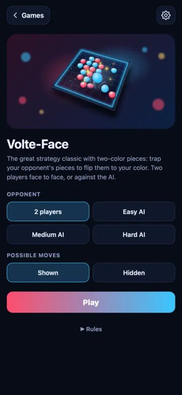
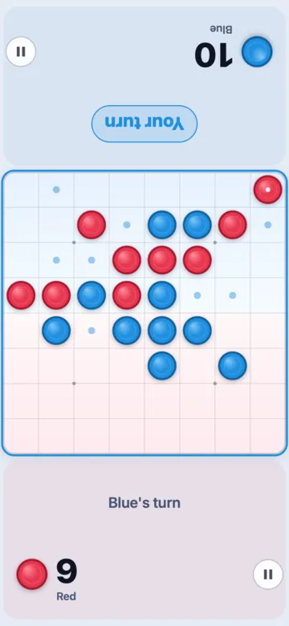
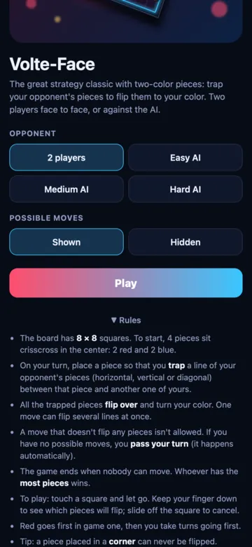

Volte-Face, the piece-flipping board game
The great strategy classic with two-color pieces. Trap your opponent's pieces and they flip over to your side. Rules you learn in a minute, games that come down to the very last piece.
- 1 or 2 players
- 8 × 8 board
- 3 AI levels
- Possible moves shown
Twoble is coming very soon. The app is free.


How to play Volte-Face
The goal: have the most pieces of your color when nobody can move anymore.
- The board has 8 × 8 squares. To start, 4 pieces sit crisscross in the center: 2 red and 2 blue.
- Red goes first in game one, then you take turns going first.
- On your turn, place a piece so that you trap a line of your opponent's pieces (horizontal, vertical or diagonal) between that piece and another one of yours.
- All the trapped pieces flip over and turn your color. One move can flip several lines at once.
- A move that doesn't flip any pieces isn't allowed. If you have no possible moves, you pass your turn (it happens automatically).
- The game ends when nobody can move. Whoever has the most pieces wins.
The three blue pieces are trapped between two red ones: they flip over and turn red.
Play with a fingertip
- Touch a square and let go to place your piece.
- Keep your finger down to see which pieces will flip before you commit.
- Slide off the square to cancel.
- Small dots show the possible moves. For more of a challenge, hide them in the options.
- Each player's score faces them: playing together, everyone reads the right way up.


6 tips to win at Volte-Face
Flipping lots of pieces right away isn't always smart. Here's what good players do.
1. Take the corners
A piece in a corner can never be flipped. It's the most valuable square on the board.
2. Beware the squares next to corners
Playing there too early often hands the corner to your opponent. Wait until the corner is taken or safe.
3. Edges are strong
A piece on an edge can only be flipped along that edge. It's harder to take back than a piece in the middle.
4. Keep few pieces early on
Early in the game, the fewer pieces you have, the fewer moves your opponent gets. Let them box themselves in.
5. Count the possible moves
A player with no moves passes, and the other plays again. Keep your opponent away from good squares.
6. It all comes down to the end
Only the final position counts. A game can turn around in the last few moves.
Volte-Face questions
How do you flip pieces in Volte-Face?
Place a piece so that a line of your opponent's pieces, horizontal, vertical or diagonal, is trapped between that piece and another one of yours. All the trapped pieces flip over and turn your color.
What happens if I can't move?
If you have no possible moves, you pass your turn automatically and your opponent plays again. The game ends when nobody can move.
Who wins Volte-Face?
The player with the most pieces of their color on the board at the end of the game. A draw is possible.
Who goes first?
Red goes first in game one, then you take turns going first.
Need some action?
Switch to Air Hockey: one puck, two mallets, and first to 7 goals wins.